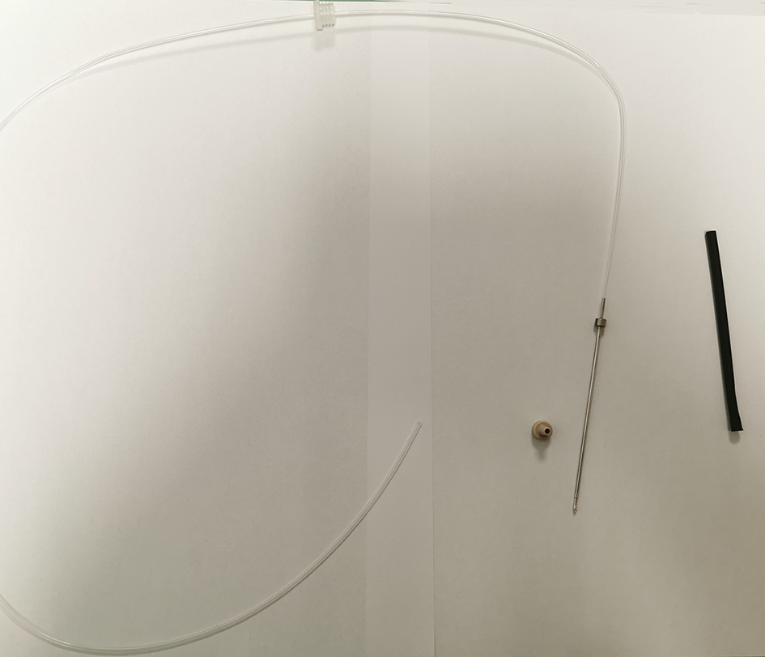
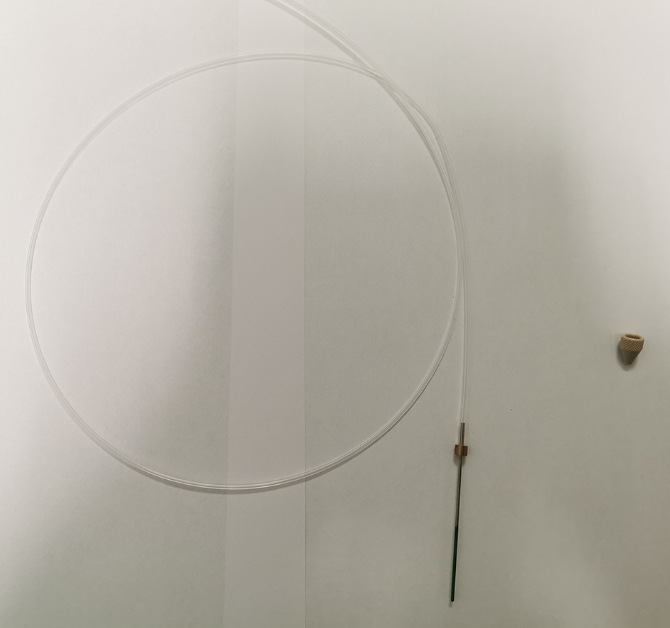
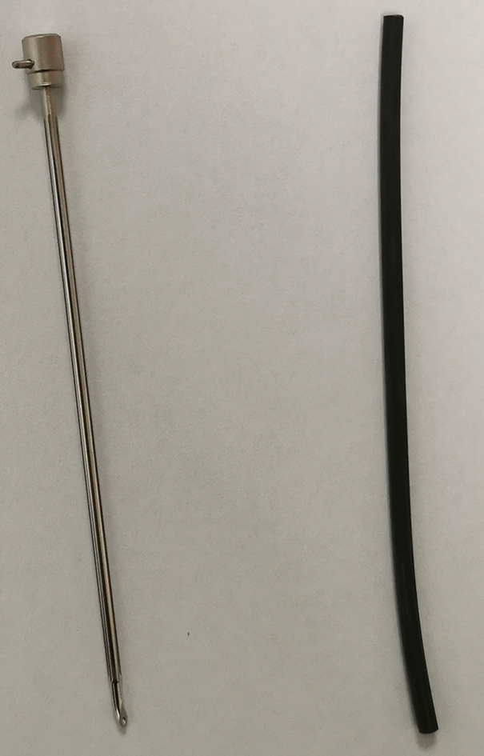
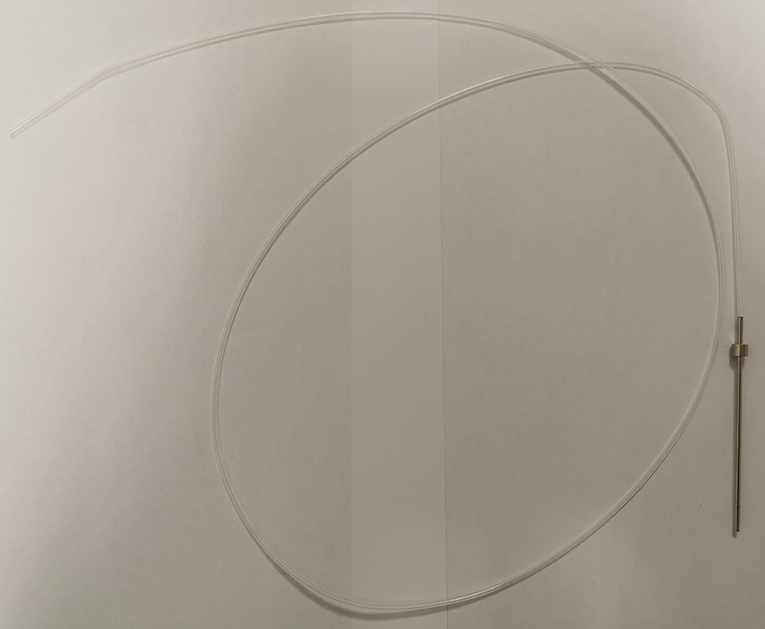
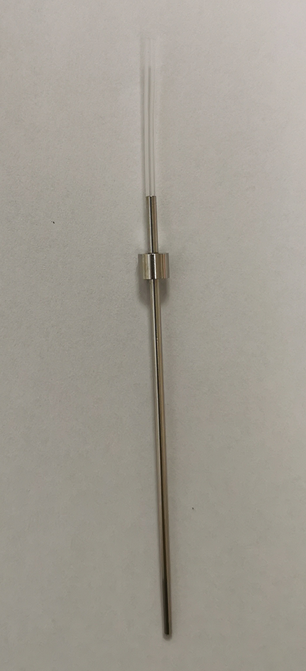

L'instrument dispose de 3 aiguilles :
L'aiguille n°1 est réservée aux plasmas échantillons, de contrôle et de calibration.
L'aiguille ACR, si présente, est également vissée à cet emplacement.
L'aiguille non perçage, si présente, peut également être vissée à cet emplacement.
L'aiguille n°2 est réservée aux réactifs à distribuer avant la première incubation.
L'aiguille n°3 est réservée aux réactifs à distribuer après la première incubation et assure le préchauffage du réactif déclenchant.
Aiguille n°1 perçage (sur bras n°1)

Aiguille n°1 non perçage (sur bras n°1)

Aiguille n°1 ACR (sur bras n°1)

Aiguille n°2 (sur bras n°2)

Aiguille n°3 (sur bras n°3)
